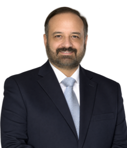

Fundación Latinoamericana para la Educación a Distancia
Bienvenidos al sitio oficial de FLEAD. Impulsamos la investigación, la formación y la difusión de la Educación a Distancia en Iberoamérica desde hace más de dos décadas.
- 2003
- Año de constitución de la Fundación, tras un año de trabajo comunitario en red.
- 16+
- Investigadores y representantes en Argentina, México, España, Rep. Dominicana, Bolivia, Perú y Grecia.
- 8
- Ediciones del Congreso Virtual Iberoamericano EduQ@ de Calidad en Educación Virtual y a Distancia.
Nuestra historia
2002
Un grupo de investigadores impulsa un proyecto para integrar servicios y crear una plataforma de interacción entre profesionales de la Educación a Distancia.
Durante ese año, el trabajo colaborativo por Internet permite analizar las necesidades reales de investigadores independientes, profesores y estudiantes en formación continua.
2003
Para nuclear a esta comunidad creciente nace la Fundación Latinoamericana para la Educación a Distancia: una institución sin fines de lucro dedicada a difundir la modalidad a distancia como herramienta clave de la formación profesional permanente.
2005
FLEAD participa del Congreso Internacional LatinEduca2005 y firma sus primeros convenios de cooperación académica, entre ellos el convenio marco con la Universidad del Caribe (UNICARIBE, República Dominicana).
2008
Se realiza la primera edición del Congreso Virtual Iberoamericano EduQ@ de Calidad en Educación Virtual y a Distancia, que desde entonces reúne cada edición a especialistas de toda Iberoamérica.
En los años siguientes la Fundación consolida una red de investigadores y representantes en Argentina, México, España, República Dominicana, Bolivia, Perú y Grecia, y pone en marcha una Maestría Interuniversitaria junto a universidades asociadas.
2021
El Congreso EduQ@ llega a su octava edición, sosteniendo casi dos décadas de trabajo ininterrumpido por la Educación a Distancia en Iberoamérica.
🎯Misión
Ubicar a la Educación a Distancia como parte integral del sistema educativo, considerándola una alternativa con formas particulares de organización y requerimientos específicos para su desarrollo.
🔭Visión
Promover y facilitar el desarrollo de la Educación a Distancia en las prácticas educativas de todos los niveles del sistema, en el marco de los nuevos paradigmas metodológicos y tecnológicos.
Objetivos de la Fundación
Nuestro estatuto define objetivos institucionales y sociales. Estos son los ejes principales:
Investigación y formación docente
Estimular el estudio y la investigación en Educación a Distancia, formando y perfeccionando docentes e investigadores.
Programas académicos propios
Fundar y administrar institutos, carreras de grado y posgrado, y centros de investigación científica y cultural.
Cooperación internacional
Firmar convenios con instituciones públicas y privadas, nacionales e internacionales, afines a nuestro objeto fundacional.
Ver el listado completo de objetivos institucionales y sociales
Objetivos institucionales
- Estimular el estudio e investigación en el área de educación a distancia, integrando todas sus ramas, a través de la formación y el perfeccionamiento del personal docente y auxiliar, mediante institutos de enseñanza e investigación que podrán funcionar en universidades, colegios o instituciones oficiales bajo dependencia directa de la Fundación.
- Realizar tareas de enseñanza, docencia e investigación que contribuyan al desarrollo socio-político, cultural e intelectual de las instituciones y de la comunidad, dentro de escuelas, institutos o colegios universitarios de nivel terciario.
- Lograr el perfeccionamiento y la capacitación integral, científica y humanística de quienes participan del proyecto educativo, en orden a la excelencia de profesionales, docentes, investigadores y educandos.
- Fundar, adquirir y administrar escuelas, colegios, universidades e institutos, o cualquier otro tipo de establecimiento educacional formativo o de perfeccionamiento.
- Organizar y desarrollar carreras de grado y posgrado, especialmente colegios universitarios de nivel terciario y universidades.
- Organizar el centro de documentación de la Fundación y brindar información sobre sus fines, logros y objetivos, realizando publicaciones, traducciones y ediciones.
- Mantener vinculaciones y convenios de cooperación, complementación y asistencia con otras personas físicas o jurídicas, públicas o privadas, nacionales o internacionales, dedicadas al estudio y ejecución de nuestro objeto.
- Organizar, participar y/o patrocinar congresos, conferencias, simposios, seminarios, reuniones, exposiciones, cursos y jornadas académicas vinculadas a nuestra actividad.
- Promover y encarar acciones que despierten y estimulen la vocación por los estudios de todas las disciplinas vinculadas a nuestro objeto.
Objetivos sociales
- Formar profesionales que contribuyan al desarrollo de la sociedad mediante la investigación en un mundo intercomunicado.
- Apoyar la formación continua de los profesionales y su capacitación en medios didácticos no convencionales de elevado nivel científico, técnico y humanístico.
- Profundizar el desarrollo de programas de EAD garantizando la promoción social de sus destinatarios, mediante el autoaprendizaje y la autoconstrucción metacognitiva y autónoma del saber.
- Nuclear a los investigadores independientes, apoyándolos con la infraestructura necesaria para sus trabajos de investigación en el área educativa.
Autoridades y representantes
FLEAD está conducida por un Consejo Directivo y una red de representantes académicos en Iberoamérica y Europa.

Dr. José Luis Córica
Doctor en Educación, mención Doctorado Internacional, por la UNED de Madrid (2019, sobresaliente cum laude). Dirige la Fundación y el Instituto Latinoamericano de Investigación Educativa desde 2011, y es Director de Ciencia de Datos en EmotionMetrics.ai. Profesor de posgrado en universidades de España, Argentina, México, Nicaragua y República Dominicana; miembro del Board of Experts de HE Higher Education Ranking.
Ma. Sol Orozco Aguirre
Representante para España e Islas Baleares. Maestría en Edición (Univ. de Alicante / Barcelona / Carlos III).
Ma. de Lourdes Hernández Aguilar
Representante para México. Coordinadora Académica del Campus Virtual, UAEH.
Magdalena Cruz Benzán
Representante para el Caribe. Vice-rectora de Asuntos Internacionales, UAPA.
Elinore Joy Holloway Creed
Magíster UNED. Ha dirigido más de 30 tesis de investigación en la UNAM.
Patricia Legorreta
Responsable de Diseño Instruccional, Campus Virtual UAEH; Directora Académica, INACIPER.
Ciro Sampiero Levinson
Coordinador de la Especialidad en Tecnología Educativa, Campus Virtual UAEH.
María Elena Palma Moreno
Doctora en Ciencias de la Educación. Docente-tutora de plataformas educativas en Moodle.
Denise Rodaro
Profesora de Historia. Fundadora de la comunidad telemática del Corredor Bioceánico del Norte Santafesino.
Gloria de la Garza
Académica de tiempo completo, UNAM (FES Acatlán). Autora de materiales educativos en español e italiano.
Charalampos Dimou
Máster Internacional UNED. Formador docente en TIC en Atenas y en la UAEH, México.
Lilian Cejas
Especialista en Docencia Universitaria (UTN). Formación de tutores en EAD por Internet.
Nancy M. Rojas de Beras
Máster en Enseñanza y Aprendizaje Abierta y a Distancia. Licenciada en Mercadeo.
María Chiok Guerra
Directora del Centro Internacional de Tecnologías, Desarrollo Empresarial y Liderazgo, Univ. Ricardo Palma.
Gabriel Almazán Vega
Profesor investigador de tiempo completo, UAEH. Responsable del Campus Tepeji.
Yadira Ríos Ramírez
Jefa de Departamento del Bachillerato a Distancia, UAEM.
Programas e iniciativas
Seis frentes de trabajo, desde el aula virtual hasta la publicación científica.
Aula Virtual (Moodle)
Ofrecemos aulas virtuales Moodle propias, personalizadas con la identidad de cada institución educativa, para hasta 1.000 usuarios y 50 cursos.
Solicitar informaciónEditorial Virtual Argentina
Oferta editorial de la comunidad educativa: publicación de trabajos investigativos, tesis y artículos para la comunidad hispanohablante.
Visitar editorialeva.netCongreso EduQ@
Congreso Virtual Iberoamericano de Calidad en Educación Virtual y a Distancia, con ocho ediciones realizadas junto a universidades de Latinoamérica.
Visitar eduqa.netRevista Cognición
Revista científica abierta: cualquier miembro de la comunidad latinoamericana puede proponer artículos y trabajos de investigación.
Visitar cognicion.netInstituto Latinoamericano de Investigación Educativa
Nuclea a investigadores independientes con casillas de correo, alojamiento web, procesamiento estadístico, aulas virtuales y bibliotecas de datos compartidos.
Conocer los proyectosDirección de Tesis
Acompañamos tesistas de grado, maestría y doctorado con un director de tesis y una comunidad de investigadores en su misma línea de trabajo.
Consultar disponibilidadContacto
Escribinos para consultas institucionales, aulas virtuales, publicaciones o dirección de tesis. Te respondemos desde el área correspondiente.
- Consultas generalesinfo@flead.org
- Presidenciapresidencia@flead.org
- Aulas virtuales / Moodleaulavirtuales@flead.org